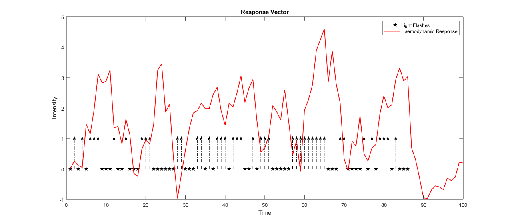
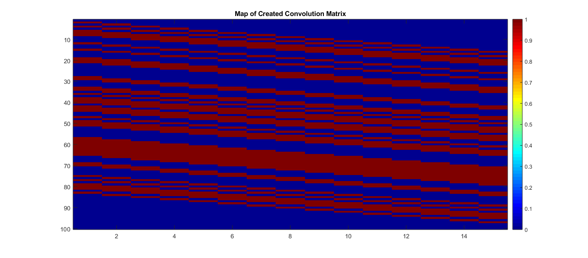
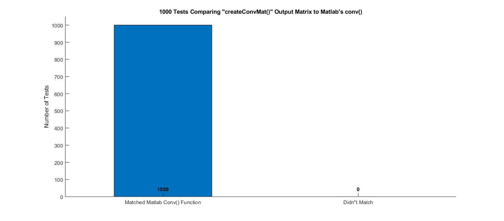
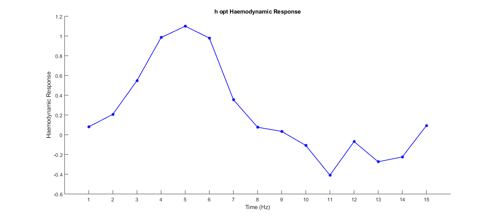
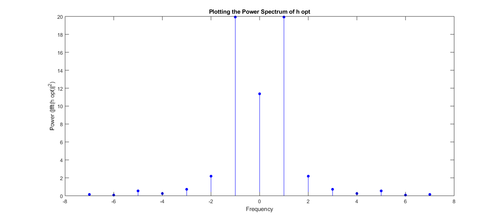

Contents
- HW # 3 - Question 4 - Math Tools - Matthew DeVerna
- Question 4: Deconvolution of the Haemodynamic Response.
- Plot Input and Impulse Vectors Over Time
- Rewriting the Equation with createConvMat(x,M)
- createConvMat() Output Matrix vs. conv(): The Ultimate Showdown...
- Least-Squares Regression: h_opt for X
- Plotting in the Power Spectrum of HRF
HW # 3 - Question 4 - Math Tools - Matthew DeVerna
clear
close all
Question 4: Deconvolution of the Haemodynamic Response.
% Neuronal activity causes local changes in deoxyhemoglobin concentration % in the blood which can be measured using magnetic resonance imaging % (MRI). One drawback of this is that the haemodynamic response is both % delayed and slower than the underlying neural responses. We can model the % delay and spread of the measurements relative to the neural signals using % a linear shift-invariant system: % r(n) = sum( x(n-k)*h(k) for all k's where: % x(n) = an input signal delivered over time (for example, a sequence % of light intensisties) % k = time % h(k) = the haemodynamic response to a single light flash at k = 0 % i.e. the impulse response of the MRI Measurement % r(n) = the MRI response to the full input signal load('hrfDeconv.mat') % In this file: % r = response vector % x = input vector (sequence of impulses [flashes of light]) % NOTE: signals are sampled at 1 Hz % Using the above data, we will try to estimate the HRF (h)
Plot Input and Impulse Vectors Over Time
time = linspace(1, length(r), length(r)) ; figure ; stem(x, 'filled','pentagram', 'LineStyle','-.','Color','k') hold on plot(time,r, 'r', 'LineWidth', 1.25) title('Response Vector') xlabel('Time') ylabel('Intensity') legend('Light Flashes' , 'Haemodynamic Response')
Rewriting the Equation with createConvMat(x,M)
% Since convolution is linear, we can rewrite the above equation as a % matrix multiplication: % r = X * h % h = length M % X = an N + M - 1 X M matrix (N is the length of input x) % The overall idea here is to create a matrix which replicates % the convolution function/the equation above. Having said that, lets test % it out below and see if they compare. h = randi(50,15,1) ; M = length(h) ; X = createConvMat(x,M) ; my_r = X*h ; MATLAB_r = conv(x,h) ; % We round here to correct for matlab's rounding issues matching = isequal(round(my_r,5),round(MATLAB_r,5)) % Create a nice visualization to assist our TAs in their mountainous % endeavour to check all MathTools homework figure ; imagesc(X) colormap jet colorbar title('Map of Created Convolution Matrix')
matching = logical 1
createConvMat() Output Matrix vs. conv(): The Ultimate Showdown...
This looks good so far, but lets try 1000 different random combinations and see how it shakes out.
loops = 1000 ; correctOrNot = zeros(30,1); % Create a bucket of zeros for ii = 1:loops h = randi(50,15,1) ; % Random vector of length 15 to create matrix M = length(h) ; % Get important dimension X = createConvMat(x,M) ; % Use my function to create matrix my_rand_r = round(X*h, 5) ; % Use this matrix to convolve with h MATLAB_rand_r = round(conv(h,x), 5) ; % Use MATLAB convolve function correctOrNot(ii) = isequal(my_rand_r,MATLAB_rand_r) ; % Replace a zero with a one for every matching iteration end correct_answers = sum(correctOrNot) ; % Take the sum to find the total correct incorrect_answers = loops-correct_answers ; % subtract the sum from the loops to get total incorrect answers = [correct_answers, incorrect_answers] ; % Put these totals in a matrix xnames = categorical({'Matched Matlab Conv() Function','Didn"t Match'}) ; % Create x-axis labels xnames = reordercats(xnames,{'Matched Matlab Conv() Function','Didn"t Match'}) ; % Do this b/c it locks the order in for the plot (idky) % Plot figure ; bar(xnames,answers, .5) ; ylim([0 (loops + (round(.05*loops)))]) title(string(loops) + ' Tests Comparing "createConvMat()" Output Matrix to Matlab''s conv()') ylabel('Number of Tests') box off % Add the totals onto the plot for ii=1:numel(answers) text(ii, 25, string(answers(ii)),... 'HorizontalAlignment','center',... 'VerticalAlignment','bottom',... 'FontWeight', 'bold') end
Least-Squares Regression: h_opt for X
% Now lets take the last convoution matrix we created and find it's least % squares optimal h values. I use the linear regression equation created in % the past homework and input r. % The equation is: % h_opt = min(h)||r- X*h||^2 h_opt = linear_Reg(X, r) ; short_time = linspace(1,length(h_opt),length(h_opt)) ; % We can plot these values as a function of time figure ; plot(h_opt,'b*-', 'LineWidth', 1.25) xticks(short_time) xlabel('Time (Hz)') ylabel('Haemodynamic Response') xlim([0 16]) title('h opt Haemodynamic Response') box off % Describe the what's going on with the haemodynamic response and time HDR_answer = {'Looking at this plotted function we can see that the haemodynamic' 'response spans 15 Hz. The largest response is at 5 Hz.' 'Afterwards, we see a sharp drop off of response, which eventually falls' 'below zero (approx. 8Hz). This tells us that we would need to take into account' 'a delay of 5Hz during our readings.'}
HDR_answer =
5×1 cell array
{'Looking at this plotted function we can see that the haemodynamic' }
{'response spans 15 Hz. The largest response is at 5 Hz.' }
{'Afterwards, we see a sharp drop off of response, which eventually falls' }
{'below zero (approx. 8Hz). This tells us that we would need to take into account'}
{'a delay of 5Hz during our readings.' }
 Plotting in the Power Spectrum of HRF
HRF = abs(fft(h_opt)).^2 ; DC_centered = fftshift(HRF) ; x_vals = linspace(-7,7,15) ; figure ; stem(x_vals, DC_centered, 'b', 'filled', 'Marker', '.', 'MarkerSize', 18) title('Plotting the Power Spectrum of h opt') xlabel('Frequency') ylabel('Power (|fft(h opt)|^2)') WhatKindOfFilterYouAsk = { 'This filter seems to allow only those frequencies through which are close' 'to zero. As a result, we call this a low pass filter.'}
WhatKindOfFilterYouAsk =
2×1 cell array
{'This filter seems to allow only those frequencies through which are close'}
{'to zero. As a result, we call this a low pass filter.' }
